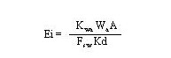
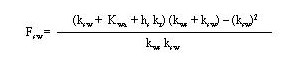
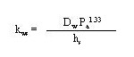
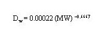
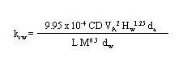
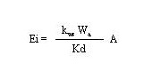

2.12 Surface Impoundments With sediment-Controlled Emissions
An Alternatice model that includes both sediment-to-water transfer and water-to-air transder processes in surface impoundments is implemented in the user-interface (AG=VCASE = 7) of MEPAS 3.n versions. The Surface impoundment formulations given above are not appropriate for cases where the sediment-to-water transfer controls emission rates. Following a method suggested by Thibodeaux(a) and later documented in Thibodeaux (1989), a model was developed using a set of mass transfer coefficents that control the diffusion of volatile chmeicals from the sediment to the water and then from the water to the air. This method is based on experimental work done by Imodeb and Emerson (2977) and Thibodeaux and Becker (1982). The combination of this work and the work by MacKay and Leinonen (1975) provides the basis for the MEPAS formulation for computing sediment-controlle3d gaseous emission rates from the pond or lagoon. The atmospheric emission rates are computed using

(39)
Where
Ei = the emission rate of the constituent (g/s)
Kwa = overall water-side mass-transfer coefficient at the water-air interface (cm/s)
Wa = constituent concentration in sediment (g/g)
A = area of the body of water (cm2)
fsw = sediment-water interface factor (dimensionless)
Kd = partition coefficient between sediment and water concentrations(cm3/g).
Hwang (1991) derives Equation 39 considering the mass-transfer resistances from sediment to water and from water to air. The emission rate is expressed in terms of the constituent concentration in the sediment. The sediment-water interface factor contains coefficients pertinent to resistances in all the phases considered and is given by

(40)
where
fsw = sediment-water interface factor (dimensionless)
kws = sediment-side mass-transfer coefficient at the sediment-water interface (cm/s)
hs = depth of contaminanted sediment (cm)
kr = reaction rate constant in the column of water (s-1).
The sediment-side mass-transfer coefficient can be computed using

(41)
where is the molecular diffusivity in water (cm2/s) and Pa is the air-filled porosity of the sediment (dimensionless).
The water diffusion coefficent (Dw) can be estimated using the empirical relationship (O'Connor and Muller 1980)

(42)
where MW is the molecular weight of the constituent. The coefficient has units associated with it that give values of molecular diffusivity in cm2/s.
The mass-transfer coefficient from sediment to water, ksw, as proposed by acid in a wind-water tank. Using the results of this study, they developed the following general formula for computing ksw:

(43)
where
ksw = water-side mass-transfer coefficient at the sediment-water interface (cm/min)
9.95 x 10-4 = empirical correction factor [(g/mole)1/2min/(cm)1.25]
CD = drag coefficient at the water-air interface (dimensionless)
VA = wind speed over the water at 10 meters (cm/min)
Hw = average depth of the water column (cm)
da = density of the air (g/cm3)
L = average length of the wind fetch (cm)
M = gram molecular weight of the contituent (g/mole)
dw = density of the water (g/cm3.
The constant 9.95 x 10-4 in Equation 43 is the product of empirical factors and the correction for the molecular weight of benzoic acid. Also, wind and/or thermal forces are assumed to be sufficient for a well-mixed situation to exist in the water.
Hwang (1991) simplified Equation 40 by expanding its terms and comparing the typical values of each term encountered in practical situations. He substituted the simplified Equation 40 into Equation 39 (see Hwang 1991 for the simplification) and presented the following modified equation:

(44)
Equation 44 shows that, for certain contaminants with a high tendency to partition in the sediment, the sediment-phase controls the release rate of the constituent.